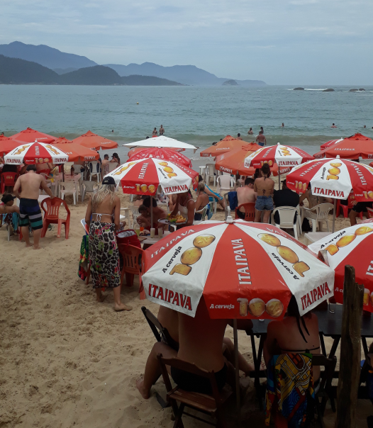
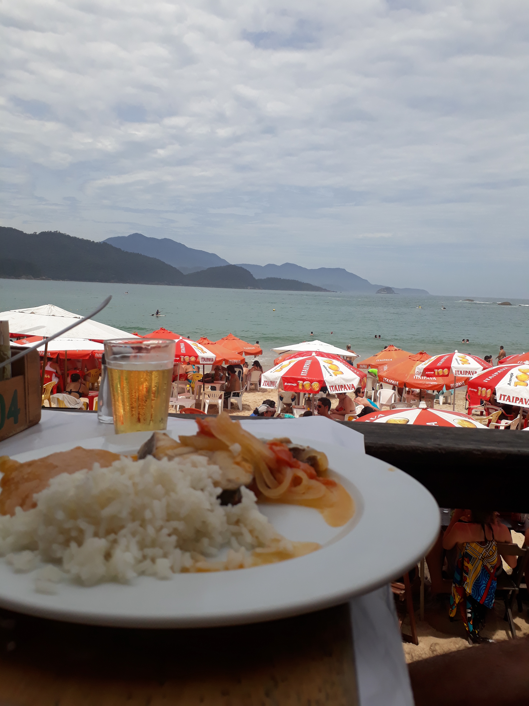

Este es el tercer texto de una serie de capítulos sobre Brasil que entrelazan las vivencias que tuve en mi paso por Río de Janeiro, Ilha Grande, Parati, São Sebastião e Ilhabela. No solo van a poder obtener información y detalles de los lugares sino que estos capítulos van a contener un hilo narrativo.
"Pra tudo se da um jeito" (para todo se encuentra un modo)
Praia do Rancho, Trindade, Parati.
La balsa arribó a Angra dos Reis proveniente de Ilha Grande. Nada más bajar, me encontré con una de esas sorpresas alegres que solo te regalan las ciudades brasileñas, había una feria hermosísima en el Puerto, a todo color, con distintas comidas y hasta con un escenario montado donde una banda que cantaba canciones en inglés buscaba deleitar a los presentes. Desde allí, solo tuve que caminar una cuadra hacia la derecha y tomar el bus Colitur que en aproximadamente 2hs nos deja en Parati. Su precio es entre los 15 y 20 reales.
El viaje fue especial, estaba muy cansado y entre las increibles vistas costeras que tenía desde mi ventana y mis pensamientos recordando todo lo que había vivido en Ilha Grande, caí en sueño. A las 22hs, aproximadamente, llegué a la terminal de Parati y me dirigí caminando al "Che Lagarto", que se encuentra a unas diez cuadras de la estación. Así fue que me empecé a adentrar en este pequeño pueblo y al pasar la avenida principal sentí literalmente como si estaba viajando en el tiempo, estaba en el Brasil colonial, las calles antiguas de adoquines, las casas pintadas de diversos colores alegres y en el ambiente se respiraba romance. ¿Romance? Sí, no sé como explicar, sus calles, su arquitectura y sus pequeños y pintorescos restaurantes hacian de Parati el destino ideal para parejas.
Esa noche deje mi mochila en el Che Lagarto, que estaba plagado de personas, y me fui a caminar por las calles que estaban mucho mas tranquilas. Cené en un restaurante muy bonito un pastel de batatas y pollo increíble, de lo más rico que comí en Brasil. Estaba matadísimo, así que solo di un paseo corto por el pequeño centro y me fui a dormir.
Me confundí con el Che Lagarto, estuve en varios hostels y en todos reinaba una suerte de empatía viajera donde todos respetan unas reglas de convivencia y de camaradería que ese día no fueron respetadas. Creo que cada hostel se caracteriza por distintas cualidades, los Che Lagarto, generalmente, por la fiesta. Pero en fin, después de una noche complicada para dormir, debido a dos francesas de 18 años totalmente borracha, me desperté, desayuné y me fui a la estación de bus, quería conocer las playas de Trindade que me las habían recomendado en Ilha Grande.
¿Qué hacer en Trindade, Parati?
No les voy a mentir, me había quedado pensando bastante en la chica de la ducha de Ilha Grande y la ciudad romántica de Parati no ayudaba mucho a disipar los pensamientos. Esperando en la fila, para subir al bus, fue que conocí a dos chicas brasileñas, profesoras de inglés, que también hablaban un poco de español. Una de ellas rondaba los 30 años y la otra los 40, pero lo que menos me iba a imaginar que me iban a terminan acuñando casi como un hijo.

Praia do Meio, Trindade, Parati, Brasil.
Ir del centro de Parati a Trindade es muy fácil, en la terminal salen cada 1hs los buses Colitur que después de andar alrededor de 50 minutos por unos caminos sinuosos, no aptos para los que tienen fobia a las montañas rusas, llegan a Trindade. Esta ciudad, cuenta con un centro pequeño y varias playas que se pueden recorrer en un mismo día. El Colitur llegó a destino y había pegado tanta onda con las brasileñas que me invitaron a almorzar "la verdadera comida brasileña". Ellas decian que no me podía ir de Brasil sin probar lo que comen los brasileños y no se confundieron. Fue así, que nos dirigimos a la Praia do Rancho y después de unas cuantas cervezas, nos decidimos a comer un plato típico local "Moqueca de peixe". La situación era la siguiente: Estaba por almorzar una comidad que ni sabía que tenía con dos chicas que no conocía y que cada dos minutos me pedían una foto y se la enviaban al grupo de whatsapp de "profesoras", para después mostrarme las mil y una cosa que respondían sus amigas. Situaciones bizarras que solo te pasan viajando, y yo, totalmente bordo de la verguenza. La tarde casi que se pasó entre charlas, paseos por distintas playas, reaggeaton y hasta helados de mojito. Si, HELADO DE MOJITO.
Moqueca de peixe, un plato típico brasileño. Praia do Rancho, Trindade, Parati, Brasil.
El teléfono no suena, supongo que sos vos.
Eran aproximadamente las 17h cuando decidí ir a merendar solo y acceder al wifi ya que desde el día anterior no tenía internet. ¿Qué cosa, no? Un día sin internet y ya sentimos que no sabemos nada del mundo.
El mozo preguntó que quería beber y le conteste que una coca zero, fue ahí que mi teléfono vibro por primera vez . El mozo se retiró y el móvil volvió a vibrar. Era la chica de la ducha con uno de los mensajes que más atónito me dejaron en mi vida, ella estaba intentando cambiar su vuelta a San Pablo (donde vive) para pasar un día en Parati conmigo. Me costaba creerlo, sonaba todo tan bueno con solo pensarlo. Así fue, unas horas después, estaba nuevamente en la terminal de Parati, pero esta vez, esperándola a ella.
El bus estaba programado para arrivar a las 22h y admito que pasaban extremadamente lentos los minutos previos a que el bus llegue. Me era inevitable no pensar en todas las cosas que me habían pasado los últimos meses y como la vida se empeñaba en que yo este ahí, en una terminal de una pequeña ciudad de Brasil que jamás pense que iba a conocer, esperando a una persona que había conocido en la ducha de un hostel de otro país y que había hecho todo lo que tenía a su alcance para verme un día mas.
Sentí por primera vez en carne propia que el mundo conspiraba a mi favor, era extraño, generalmente me sucedía todo lo contrario. Decidí callar mi mente cuando divisé a una cuadra el bus Colitur proveniente de Angra Dos Reis. Estaba ansioso, demasiado ansioso. Ella se bajó y lo más sorprendente de todo sucedió cuando nos saludamos, parecía que nos conocíamos de toda la vida y así fue el resto de la noche.
Paseamos por las hermosas calles de adoquines, comimos viendo una banda en vivo, reímos, bailamos, hicimos "brincadeiras" (bromas), anduvimos por la playa y hasta nos sorprendió la lluvia cuando estábamos volviendo al hotel. Definitivamente todo estaba siendo perfecto, especial, como si al doblar en alguna esquina iba a estar un camarógrafo grabando el nuevo estreno romántico de Hollywood.
Lamentablemente, lo bueno dura poco y en un abrir y cerrar de ojos, estábamos otra vez en la terminal, ella debía volver a San Pablo y yo a Río de Janeiro para tomar mi vuelo a Buenos Aires.
Después de otra despedida, esta vez más difícil que la de Ilha Grande, me encontraba en el bus de camino a la capital carioca y en mi cabeza solo cabía espacio para dos frases que la chica de la ducha me había dicho. Era extraño, las dos frases parecian sacadas de un manual de cosas que decir para sorprenderme. Una de ellas era optimista: "Para tudo se da um jeito" o se encuentra un modo y sin lugar a dudas que es así, la mayoría de las veces, todo depende de las ganas de las personas y de lo que hacemos por lograr lo que queremos, yo lo había vivido en primera persona en toda esta travesía por tierras brasileñas. La otra, fue un shock, un bife de esos necesarios para despertar: "Tengo muchas ganas de vivir, de tener historias para contar". Ella, casi sin conocerme, había descripto lo que mas quería yo para mi vida. Me sentí tan reflejado en esas palabras, sentí que lo que mas me hacia feliz era tener experiencias y que no podía dejar que nada me arrebate ese anhelo.
Entre pensamiento y pensamiento ya estaba próximo a Río de Janeiro. Fue ahí que entendí que Parati se había convertido en uno de los lugares más especiales para mi, esa ciudad colonial con aroma a romance que terminó siendo el escenario perfecto para el reencuentro y mientras miraba desde la ventana el show privado que me regalaba la selva brasileña, me pregunte: ¿Será el primero de muchos o el último?